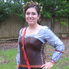
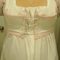
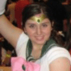

Ember Costumes
Tutorials and Resources
Costume Gallery
These are some of the costumes that we have made so far! Click on the links or thumbnails for more
information about each costume, including links to tutorials for individual costume items and props.
 Angela and John as Azula and Zuko from Avatar: the Last Airbender
Angela and John as Azula and Zuko from Avatar: the Last Airbender
Made for Nebraskon 2010
November 2010
Angela as Pokemon Trainer Leaf Green
Made for AKON 19, updated and perfected for AKON 21
June 2010
John as Pokemon Trainer Gold
Made for AKON 21
June 2010
 Angela as Queen Susan of Narnia, Night Raid Outfit
(From the Prince Caspian Movie)
November 2009
Angela as Queen Susan of Narnia, Battle Outfit
(From the Prince Caspian Movie)
November 2009 (Work in Progress)
Gunnar as a Rich Renaissance Merchant
November 2009
Angela as Jane Austen
October 2009
 Angela's Regency Corset
(Worn under Jane Austen Costume)
October 2009
John as Link
from The Legend of Zelda, Twilight Princess
June 2008
 Angela as Sailor Jupiter
June 2008
Gunnar as Han Solo
Made for San Diego Comic Con 2007, Complimented by Lavar Burton!
July 2007
John as Sam Fisher
From the videogame: Splinter Cell
Finished for San Diego Comic Con 2007
July 2007